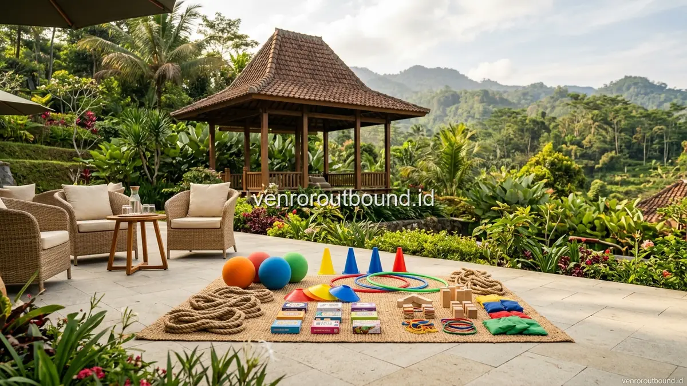

1. Mengapa Reuni Keluarga Besar Membutuhkan Pendekatan Khusus?
Jawaban Singkat: Menjalin kebersamaan lintas generasi saat reuni keluarga besar efektif dilakukan melalui permainan outbound ringan yang tidak menguras fisik berlebihan. Permainan ini dirancang agar kakek, nenek, orang tua, hingga anak-anak dapat tertawa dan bekerjasama secara harmonis, mencairkan sekat usia, serta menciptakan kenangan positif tanpa menimbulkan rasa lelah yang mengganggu.
Momen reuni keluarga besar merupakan salah satu agenda yang selalu dinanti-nantikan untuk mempererat kembali tali silaturahmi yang renggang akibat kesibukan rutinitas harian dan jarak geografis. Namun, dalam kenyataannya, mengumpulkan puluhan hingga ratusan anggota keluarga yang terdiri dari tiga bahkan empat generasi sekaligus menyimpan tantangan tersendiri bagi panitia pelaksana.
Seringkali terjadi situasi di mana generasi kakek dan nenek hanya duduk mengobrol di sudut ruangan, para orang tua sibuk mendiskusikan topik pekerjaan dan keluarga inti, sementara generasi remaja dan anak-anak asyik dengan gawai masing-masing. Pertemuan fisik memang terjadi, namun interaksi mendalam antargenerasi belum tentu terbangun secara otomatis tanpa adanya media perekat yang tepat.
Di sinilah konsep kegiatan terstruktur seperti family gathering keluarga besar berbasis outbound rekreatif memegang peranan krusial. Melalui simulasi permainan yang menyenangkan, seluruh anggota keluarga diajak berinteraksi dalam frekuensi emosional yang sama, saling mendengarkan, serta merayakan kebersamaan secara riang gembira.
2. Menjembatani Kesenjangan Komunikasi Antar-Generasi
Setiap kelompok usia dalam struktur keluarga besar memiliki karakteristik psikologis, gaya komunikasi, serta topik obrolan yang sangat beragam. Generasi senior (kakek, nenek, paman, dan bibi sepuh) umumnya menghargai cerita sejarah silsilah keluarga, petuah kehidupan, serta suasana temu kangen yang tenang dan penuh nostalgia.
Di sisi lain, generasi orang tua (dewasa produktif) cenderung membutuhkan relaksasi dari tekanan kerja kantor, sedangkan generasi remaja dan anak-anak menginginkan dinamika yang seru, visual yang menarik, dan aktivitas yang bergerak aktif. Kesenjangan ini sering kali menimbulkan rasa canggung atau segan untuk memulai percakapan jika tidak difasilitasi dengan baik.
Pendekatan outbound rekreatif bekerja dengan meruntuhkan batasan formal tersebut melalui bahasa universal, yaitu tawa, kerja sama ringan, dan apresiasi positif. Ketika seorang kakek memberikan petunjuk kata dan cucunya yang berusia 8 tahun menebak dengan antusias, tercipta jembatan emosional yang memperkuat rasa keterikatan batin antargenerasi.
3. Prinsip Merancang Permainan Outbound Ringan dan Inklusif
Berbeda dengan outbound korporat yang berorientasi pada pencapaian target kinerja atau pelatihan fisik, outbound keluarga multi-generasi harus berpegang teguh pada prinsip inklusivitas dan keselamatan. Tidak boleh ada satu pun anggota keluarga yang merasa terpinggirkan karena keterbatasan fisik atau usia.
Berikut adalah beberapa pilar utama dalam merancang aktivitas keluarga multi-generasi:
- Bebas Beban Fisik Berlebih: Menghindari aktivitas lari cepat, merayap, kontak fisik keras, atau rintangan berat yang berisiko bagi persendian lansia dan keselamatan balita.
- Berorientasi pada Partisipasi, Bukan Kompetisi Keras: Suasana permainan diarahkan untuk saling mendukung dan menertawakan kekeliruan lucu bersama, bukan menciptakan rivalitas antarkeluarga inti.
- Aturan Main yang Lugas dan Mudah Dipahami: Fasilitator menggunakan instruksi verbal yang singkat, visual yang jelas, serta peragaan langsung sehingga anak-anak dan peserta senior mudah menangkap inti permainan.
- Fleksibilitas Peran: Peserta yang tidak memungkinkan bergerak aktif tetap dapat berpartisipasi penuh sebagai pemberi strategi, pemegang papan petunjuk, atau penilai regu.
4. Contoh Aktivitas Interaktif: Dari Kuis Nostalgia hingga Teamwork Santai
Aktivitas yang dirancang dengan cerdas mampu menghidupkan suasana tanpa mengorbankan kenyamanan fisik. Berdasarkan pengalaman penyusunan program kebersamaan keluarga, beberapa format permainan berikut sangat efektif diterapkan:
A. Kuis Estafet Pohon Keluarga (Family Tree Trivia): Permainan tebak silsilah keluarga, nama panggilan masa kecil para sesepuh, hingga tempat kenangan keluarga tempo dulu. Generasi muda bertindak sebagai pencatat, sementara generasi senior menjadi narasumber utama. Permainan ini melatih daya ingat sekaligus mewariskan sejarah keluarga kepada anak cucu.
B. Menara Balok Harapan (Cooperative Wooden Tower): Setiap keluarga membentuk lingkaran santai di atas tikar rumput atau meja pendek. Setiap anggota menyusun balok kayu ringan bertuliskan harapan kebaikan untuk keluarga besar secara bergiliran. Aktivitas ini melatih konsentrasi, kerja sama halus, dan keheningan penuh konsentrasi yang diselingi gelak tawa.
C. Tebak Kata & Gerak Ekspresi: Anggota tim memperagakan kata kunci bertema hobi keluarga atau kuliner favorit tanpa suara, sementara anggota keluarga yang lebih tua menebak kata tersebut. Interaksi mimik wajah yang lucu terbukti ampuh mencairkan suasana dalam hitungan menit.

5. Tabel Matriks Komparasi Aktivitas Sesuai Karakteristik Usia Peserta
Untuk membantu panitia merancang komposisi acara yang seimbang, tabel matriks di bawah ini menguraikan penyesuaian tipe aktivitas berdasarkan kelompok usia peserta:
| Kelompok Usia | Karakteristik & Kebutuhan | Rekomendasi Format Aktivitas | Peran dalam Permainan Tim |
|---|---|---|---|
| Lansia (Senior) | Mobilitas terbatas, mengutamakan kenyamanan duduk, senang bercerita | Permainan duduk, kuis memori keluarga, tebak kata, puzzle logika ringan | Penasihat strategi, pengarah jawaban, penjaga pos koordinasi |
| Dewasa (Orang Tua) | Fisik prima, mencari relaksasi, senang mengabadikan momen | Team building santai, estafet koordinasi ringan, permainan sinergi kelompok | Koordinator regu, eksekutor permainan, pendamping anak |
| Remaja (Gen Z/Alpha) | Suka tantangan visual, dinamis, senang konten interaktif | Treasure hunt ringan, tebak musik, kompetisi kreativitas foto keluarga | Pencari petunjuk, juru taktis, penggerak semangat tim |
| Anak-Anak (Kids) | Energi tinggi, rentang fokus pendek, menyukai warna dan bentuk | Permainan gerak lagu, tangkap bola spons, puzzle warna, mini race gembira | Pemain aktif di garis depan, pencari benda tersembunyi |
6. Peran Fasilitator Ramah dalam Mengelola Dinamika Keluarga
Menghadirkan fasilitator profesional dalam acara reuni keluarga sering kali menjadi pembeda antara acara yang berjalan kaku dengan acara yang penuh kehangatan. Fasilitator berperan sebagai pemandu yang netral, sabar, dan memahami etika kesopanan saat berinteraksi dengan orang tua maupun anak-anak.
Fasilitator bertugas mencairkan kebekuan di awal sesi melalui ice breaking yang santun, memotivasi peserta pemalu agar mau terlibat tanpa merasa dipaksa, serta mengatur ritme kegiatan agar tidak terlalu lambat atau terburu-buru. Kehadiran fasilitator juga membebaskan seluruh panitia keluarga dari beban teknis, sehingga seluruh panitia dapat turut serta menikmati acara bersama keluarga tercinta.
Selain itu, fasilitator yang berpengalaman memiliki kepekaan untuk membagi perhatian secara adil. Mereka tahu persis kapan harus memberikan ruang apresiasi kepada kakek dan nenek untuk menceritakan kisah inspiratif, sekaligus menjaga agar anak-anak balita dan keponakan tetap ceria melalui yel-yel keluarga yang energik namun tidak berisik berlebihan.
Rancang Reuni Akbar Keluarga yang Hangat & Menyenangkan
Jadikan momen reuni keluarga besar Anda berkesan, nyaman untuk kakek-nenek, seru untuk anak-anak, dan bebas repot untuk panitia bersama tim profesional VENDOR OUTBOUND.
Hubungi Kami via WhatsApp7. Menyiapkan Kenyamanan Fisik: Waktu Istirahat, Area Teduh, & Konsumsi
Kunci keberhasilan family gathering multi-generasi terletak pada pengelolaan logistik dan kenyamanan fisik di lokasi kegiatan. Panitia perlu memastikan bahwa venue yang dipilih memiliki area semi-outdoor atau pendopo yang luas dan terlindung dari sengatan terik matahari maupun hembusan angin kencang.
Beberapa aspek teknis yang wajib dipersiapkan meliputi:
- Ketersediaan Kursi dan Tempat Istirahat: Menyediakan kursi dengan sandaran punggung yang nyaman untuk peserta lanjut usia di dekat area aktivitas agar mereka dapat menonton permainan dengan rileks.
- Jeda Istirahat Teratur: Menyisipkan waktu istirahat 15–20 menit setiap 45 menit aktivitas permainan untuk minum air, mencicipi camilan, atau ke toilet.
- Menu Konsumsi Ramah Usia: Menyediakan hidangan yang tidak terlalu pedas atau keras untuk anak-anak dan lansia, serta menyediakan air mineral hangat, wedang jahe, atau jus buah segar.
- Akses Sanitasi yang Dekat: Memastikan lokasi toilet bersih dan tidak memerlukan langkah naik-turun tangga yang curam bagi peserta berkebutuhan khusus.
8. Checklist Praktis Panitia dalam Mengumpulkan Kebutuhan Anggota Keluarga
Sebelum memutuskan paket kegiatan atau memesan lokasi, panitia keluarga sebaiknya menyebarkan kuesioner singkat atau mendata kebutuhan khusus anggota keluarga melalui grup percakapan keluarga. Data ini akan sangat membantu penyedia outbound dalam menyesuaikan modul permainan.
Informasi penting yang perlu dihimpun antara lain: rentang usia peserta termuda dan tertua, riwayat pantangan mobilitas atau alergi makanan tertentu, preferensi suasana (pegunungan yang sejuk seperti Batu Malang atau area taman kota), serta durasi waktu yang disepakati bersama (setengah hari, satu hari penuh, atau menginap 2 hari 1 malam).
9. Kesimpulan & Langkah Merancang Family Gathering Impian
Membangun kebersamaan lintas generasi saat reuni keluarga besar bukanlah tentang seberapa mewah dekorasi atau seberapa banyak hadiah yang disiapkan, melainkan tentang kualitas interaksi, kehangatan tawa, dan rasa saling menghargai yang tercipta di antara seluruh anggota keluarga.
Kegiatan luar ruang yang dikemas secara inklusif dan rekreatif menjadi jembatan harmonis yang menyatukan memori masa lalu para sesepuh dengan antusiasme masa depan generasi penerus. Setiap tawa ceria dan rangkulan hangat di tengah sejuknya alam terbuka akan menjadi warisan emosional yang tak ternilai bagi keutuhan keluarga besar Anda.
Dengan perencanaan aktivitas yang matang, modul permainan inklusif yang ramah fisik, serta pendampingan fasilitator yang santun, reuni keluarga besar Anda akan menjadi momen berharga yang dikenang manis oleh kakek, nenek, orang tua, hingga anak cucu di masa mendatang.
Pertanyaan Sering Diajukan (FAQ)

Arby Ardiansyah
Arby Ardiansyah menulis konten informatif mengenai outbound, team building, corporate gathering, wisata outdoor, dan perencanaan kegiatan kelompok berbasis standar manajemen risiko terpadu di Indonesia.